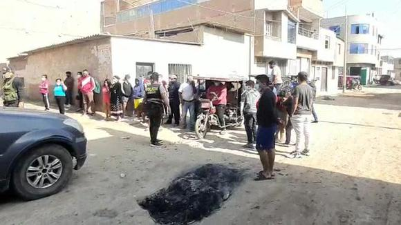

SOCIEDAD
Trágico final a joven obrero
Un obrero de construcción fue asesinado de cinco balazos por desconocidos, en Chiclayo (Lambayeque). Aparentemente, los homicidas serían tres sujetos con los que habría sostenido una discusión. Agentes de la División de Investigación Criminal (Divincri) de Chiclayo identificaron al fallecido como Flavio Jhair Gastelo Chávez (19), quien, según sus familiares, trabajaba como obrero de construcción civil. PUBLICIDAD Asimismo, informaron que por versiones de testigos tomaron conocimiento que la madrugada del jueves último la víctima fue vista conversando con tres personas en el puente peatonal situado en la avenida Chiclayo y la calle Las Mercedes, en el pueblo joven Ramiro Prialé. De pronto, empezaron a discutir y pelear. Gastelo Chávez, empezó a correr, aproximadamente 200 metros, hasta llegar al cruce de las calles Teresita y José Carlos Mariátegui, donde fue alcanzado por sus atacantes que le dispararon cinco veces en diferentes partes del cuerpo. Personal de la Sección de Homicidios de la Divincri Chiclayo realizaron las diligencias en la escena del crimen en presencia de un representante del Ministerio Público, quien dispuso el traslado e internamiento del cuerpo en la morgue de la ciudad. Por su parte, Mesías Gastelo, padre de la víctima, se mostró consternado con lo sucedido y dijo desconocer las razones de crimen de su hijo; sin embargo, pidió a las autoridades la captura de los asesinos para que sean sancionados. Un obrero de construcción fue asesinado de cinco balazos por desconocidos, en Chiclayo (Lambayeque). Aparentemente, los homicidas serían tres sujetos con los que habría sostenido una discusión. Agentes de la División de Investigación Criminal (Divincri) de Chiclayo identificaron al fallecido como Flavio Jhair Gastelo Chávez (19), quien, según sus familiares, trabajaba como obrero de construcción civil. PUBLICIDAD Asimismo, informaron que por versiones de testigos tomaron conocimiento que la madrugada del jueves último la víctima fue vista conversando con tres personas en el puente peatonal situado en la avenida Chiclayo y la calle Las Mercedes, en el pueblo joven Ramiro Prialé. De pronto, empezaron a discutir y pelear. Gastelo Chávez, empezó a correr, aproximadamente 200 metros, hasta llegar al cruce de las calles Teresita y José Carlos Mariátegui, donde fue alcanzado por sus atacantes que le dispararon cinco veces en diferentes partes del cuerpo. Personal de la Sección de Homicidios de la Divincri Chiclayo realizaron las diligencias en la escena del crimen en presencia de un representante del Ministerio Público, quien dispuso el traslado e internamiento del cuerpo en la morgue de la ciudad. Por su parte, Mesías Gastelo, padre de la víctima, se mostró consternado con lo sucedido y dijo desconocer las razones de crimen de su hijo; sin embargo, pidió a las autoridades la captura de los asesinos para que sean sancionados.